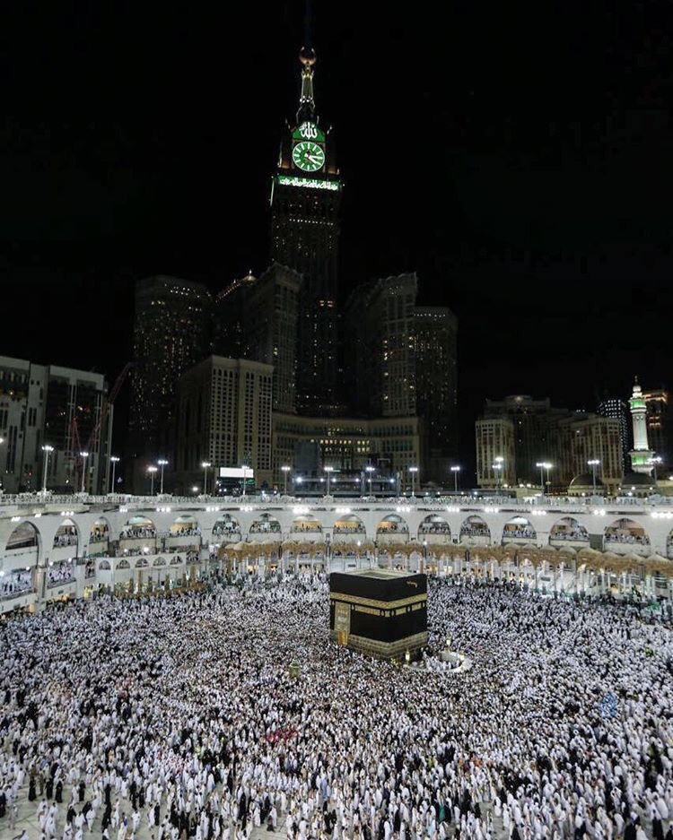

Ibadah haji merupakan rukun islam yang kelima dan wajib dilaksanakan bagi muslim yang mampu. Setiap tahun, jutaan umat muslim dari seluruh penjuru dunia berkumpul di tanah suci untuk berhaji.Salah satunya, Sa'i. Sa'i adalah lari-lari kecil antara bukit Shafa dan Marwa sebanyak tujuh kali. Ritual ini berawal dari Hajar, istri kedua Nabi Ibrahim AS, yang ditinggalkan sendirian bersama bayinya, Ismail di dataran Mekah yang tandus dan kering.Hajar yang dilanda kebingungan karena bayinya menangis kehausan, berlari bolak-balik antara bukit Shafa dan Marwa hingga sebanyak tujuh kali. Hingga akhirnya atas kehendak Allah SWT, keluarlah mata air di bawah kaki Ismail yang diberi nama zam-zam.
Berkat mata air itu, dataran yang semula sepi berubah ramai dengan kedatangan penduduk baru yakni bangsa Jurhum. Menginjak usia remaja, Ismail bersama ayahnya, Nabi Ibrahim AS, bekerja sama membangun Kakbah sampai ketinggian 7 hasta.Dengan petunjuk Jibril, mereka meletakkan posisi Hajar Aswad seperti perintah Allah SWT. Lalu Ibrahim membuat 2 pintu ka’bah. Pintu pertama terbuka ke timur dan pintu kedua terbuka ke barat. Setelahnya, keduanya melakukan ibadah haji atas perintah Allah.
Eh, tahu nggak kalau sepeninggal Nabi Ibrahim AS, banyak penyelewengan ibadah haji yang dilakukan. Belum lagi Kakbah yang sering dijadikan tempat maksiat. Karena itu, Allah memerintahkan Nabi Muhammad SAW untuk mengembalikan tempat dan tata cara berhaji agar sesuai dengan ajarannya semula.Seperti ditulis Islami.co, (24/7/2018), ibadah ini baru diwajibkan kembali kepada umat Nabi Muhammad pada tahun ke-6 hijriah (ada juga yang menyebutkan pada tahun ke-3 atau 5 hijriah) melalui firman Allah SWT: فِيهِ آيَاتٌ بَيِّنَاتٌ مَقَامُ إِبْرَاهِيمَ وَمَنْ دَخَلَهُ كَانَ آمِنًا وَلِلَّهِ عَلَى النَّاسِ حِجُّ الْبَيْتِ مَنِ اسْتَطَاعَ إِلَيْهِ سَبِيلًا وَمَنْ كَفَرَ فَإِنَّ اللَّهَ غَنِيٌّ عَنِ الْعَالَمِينَ Artinya: “Padanya terdapat tanda-tanda yang nyata, (di antaranya) makam Ibrahim, barang siapa memasukinya (baitullah itu) menjadi amanlah dia. Mengerjakan haji menuju baitullah adalah kewajiban manusia terhadap Allah, yaitu (bagi) yang sanggup mengadakan perjalanan ke sana. Barangsiapa yang mengingkari (kewajiban haji), maka sesungguhnya Allah Mahakaya dari semesta alam” (QS Ali Imran: 97).
